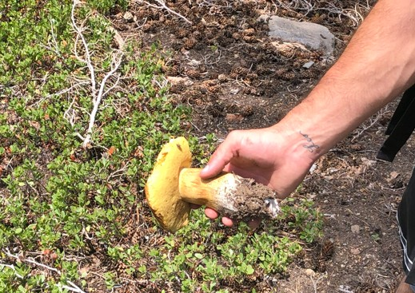
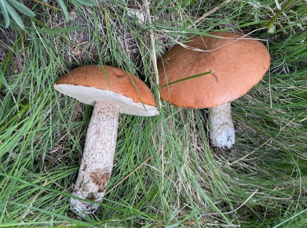
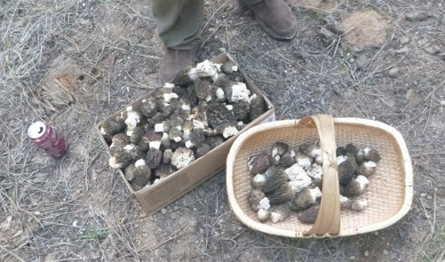
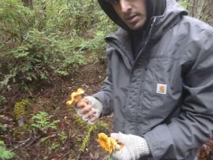
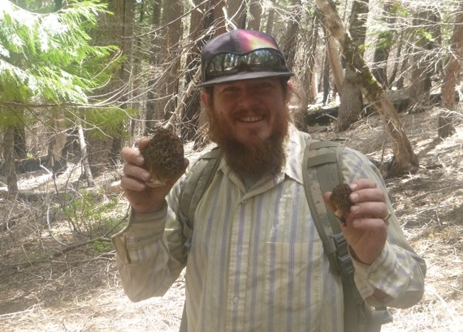
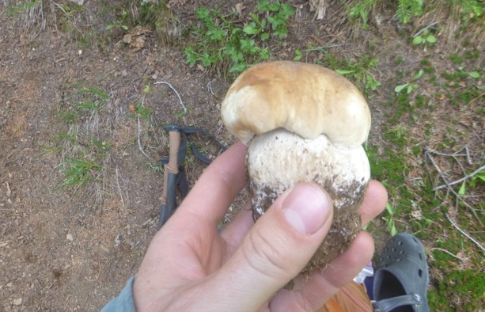
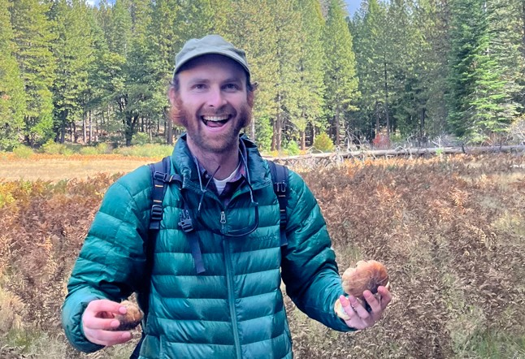
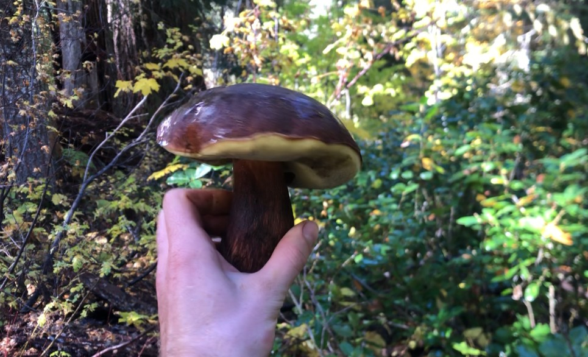
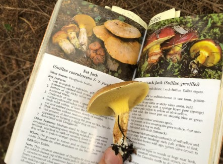
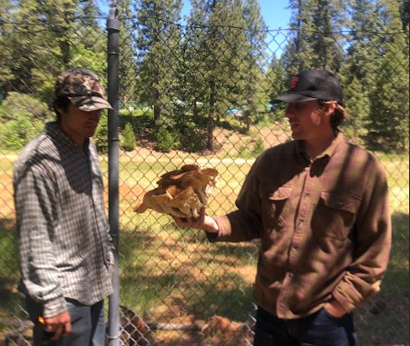

Humboldt Toiyabe National Forest, July 2020
The first ever edible wild mushroom identified in front of me.
"I think this a king bolete"

Inyo National Forest, July 2021
Aspen boletes in an eastern sierra meadow.
Once again we don't have the guts to take mushrooms for supper.

Shasta Trinity National Forest, May 2024
Amidst a caravan of mushroom prophets, we get word of a location with enough morels to feed the city of Mt Shasta.
The prophets warned us that this is not how it always goes.

Mendocino Coast, January 2025
With king boletes on my mind, I didn't understand the significance of Preston's chanterelle score.

Shasta Trinity National Forest, April 2025
Skunked searching for early season morels.
Tahoe National Forest, May 2025
A trip solidifying springtime morel mushroom hunting as an annual event.

Shasta Trinity National Forest, May 2025
I brought boxes as if we were commercial pickers, but walked out with only a handful of morels after six hours of searching.
Wallowa Whitman National Forest, July 2025
I sliced this guy up and tossed each sliver into the fire exclaiming "we could eat this!".
Without a guide, I was too green to confidently identify this as the choice king bolete it was.

Tahoe National Forest, October 2025
This is the face of someone who thinks they found king boletes.
Those are actually slimy ass slippery jacks.

Klamath National Forest, October 2025
I thought this had to be a king bolete, but could not identify it with the field guide.

Marin County, October 2025
It's fun to identify mushrooms, but not when you realize your specimen is not a king bolete.

Tahoe National Forest, May 2025
Same weekend, same spot. A recipe for failure when morel hunting.
Stanislaus National Forest, May 2025
The look of disgust at the end of a unsuccessful day searching for king boletes.
